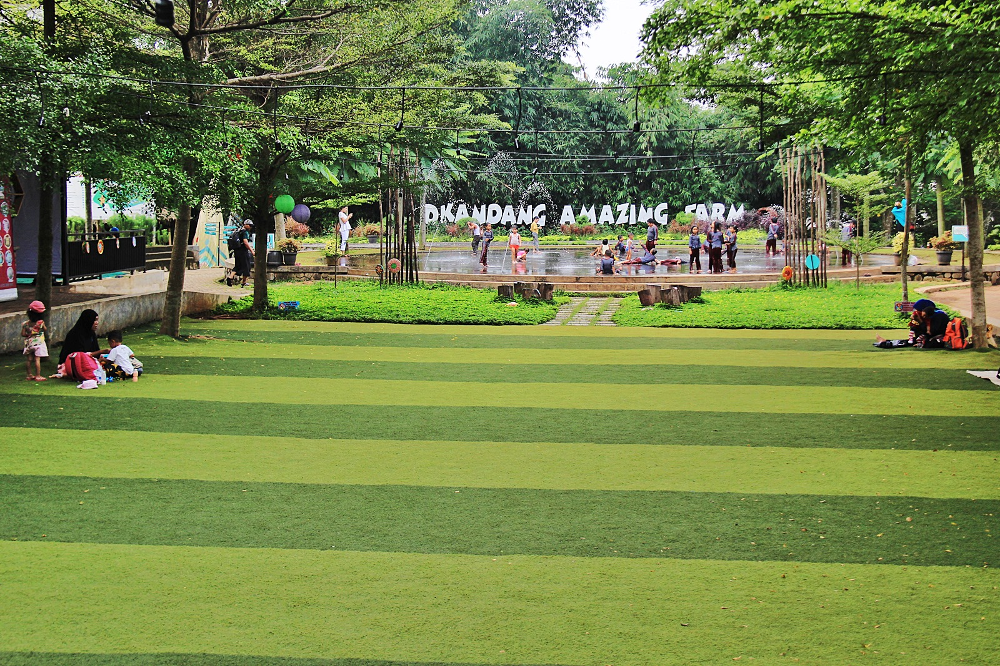
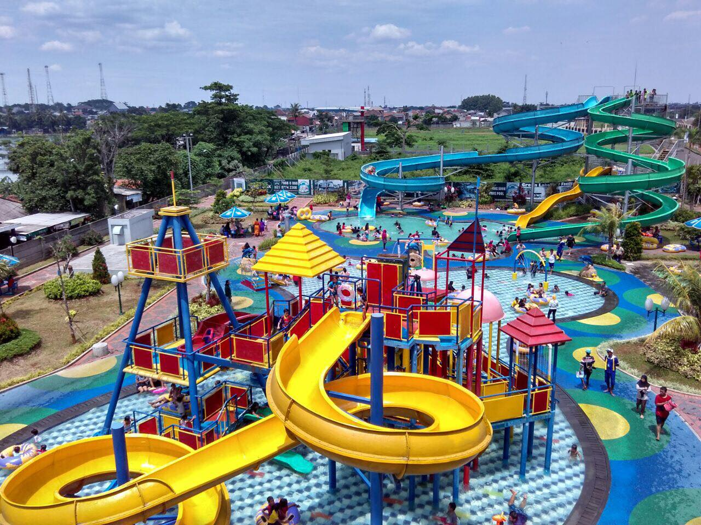

Sejarah

Ketika zaman Hindia Belanda, masa pendudukan Jepang, hingga kemerdekaan Indonesia, wilayah Depok terpisah dalam tiga kawedanan yang berbeda di Kabupaten Bogor. Ketika zaman Hindia Belanda, masa pendudukan Jepang, hingga kemerdekaan Indonesia, wilayah Depok terpisah dalam tiga kawedanan yang berbeda di Kabupaten Bogor. Setelah dihapusnya kawedanan berdasarkan Peraturan Presiden Nomor 22 tahun 1963, Kecamatan Depok setelah dihapusnya sistem kawedanan saat itu terdiri dari 11 desa, yaitu Depok, Depok Jaya, Pancoran Mas, Mampang, Rangkapan Jaya, Rangkapan Jaya Baru, Beji, Kemirimuka, Pondokcina, Tanahbaru, dan Kukusan.
Geografi

Secara geografis Kota Depok terletak pada koordinat 6° 19’ 00”–6° 28’ 00” Lintang Selatan dan 106° 43’ 00”–106° 55’ 30” Bujur Timur. Dengan luas wilayah sekitar 200,29 km², Depok merupakan daerah dataran rendah dengan ketinggian 50-140 mdpl dan kemiringan lerengnya kurang dari 15%. Depok dilalui sungai-sungai besar yaitu Sungai Ciliwung dan Sungai Pesanggrahan. Selain itu, ada juga 13 sub satuan wilayah aliran sungai dan 22 buah danau.
Wisata
Kota Depok dikenal karena keberadaan kampus Universitas Indonesia(UI). Posisinya yang gak jauh dari Jakarta, membuat Depok kerap dikunjungi wisatawan dari berbagai wilayah di Jabodetabek.
D'Kandang Amazing Farm

D’Kandang Amazing Farm adalah tempat wisata di Depok yang mengusung tema pertanian dan peternakan yang unik. Pengunjung akan diajak bercocok tanam dan bermain langsung bersama satwa yang ada di sana. Selain itu, ada banyak juga aktivitas dan wahana menarik yang menjadikan tempat ini cocok sekali untuk wisata bersama si kecil. Terdapat beberapa wahana seperti wahana edukasi, bermain, kreasi.
Green Lake View

Green Lake View adalah waterpark yang menawarkan rekreasi air menyenangkan, tidak hanya untuk orang dewasa, namun juga untuk anak-anak. Dengan beragam permainan dan wahana yang ada, waterpark yang satu ini jadi tempat yang recommended untuk dijadikan tujuan berlibur bersama keluarga. Di Green Lake View, kolam renang dibagi menjadi 2 bagian. Pertama kolam renang dewasa yang dilengkapi dengan tiga seluncuran penuh adrenalin. Sedangkan kolam anak-anak dibuat lebih dangkal dengan wahana ditengah kolam berupa kombinasi air mancur, seluncuran pendek, hingga ember tumpah.